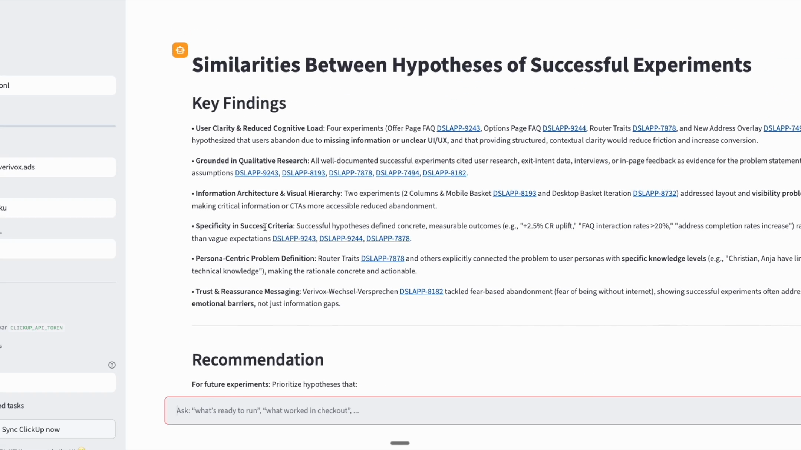

An AI assistant to turn fragmented test archives into reusable decision intelligence.
Experiment learnings were spread across tickets, comments, screenshots, and PDFs. Teams struggled to answer basic questions quickly, like whether a similar test had already been run and what it taught us.
I built an AI-powered assistant that retrieves historical experiment metadata, summarizes outcomes, and surfaces reusable patterns through natural-language queries to support faster hypothesis validation.
